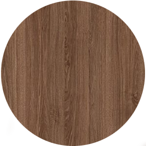

Dió
A szíjács világosszürke, széles, igényes célra nem használatos, a geszt sötétszürke, szabálytalanul futó sötét csíkokkal, gőzölés után szép sötétbarna színűvé válik. Edényei szemmel láthatóak, nagyok, ritkák, szórt elrendezésűek. Bélsugarai szabad szemmel alig láthatók, a sugármetszeten kis tükrökként jelentkeznek.